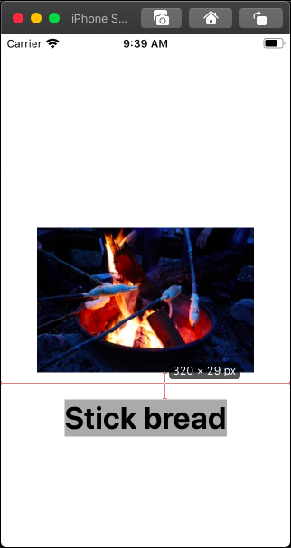
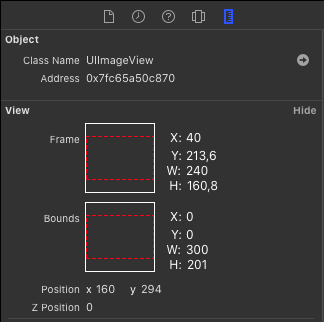

CGAffineTransform and Auto Layout
This week at work I had a strange bug in an iOS app. It looked like something was wrong with the Auto Layout constraints. The following screenshot shows a simplified version of the user interface.

In the storyboard the distance between the image and the label was defined as 10 points as you can see in the following screenshot:

But when running the app on the simulator or on a real device the space between the image and the label was much larger than 10 points. To figure out the real distance, I set the window of the simulator to Point Accurate.

With this setting the number of pixels on the Mac display correspond to the points in the user interface. To count the number of pixels, we can scale the Mac display using the zoom accessibility feature or we can use 3rd-party tool. A great tool for such a task is xScope. Using xScope, I measure a distance of 29 points.
The real user interface was more complex than that. The image view was a custom UIView subclass defined in a Xib, containing several instances of UIImageView. Because of that complexity and a few other problems in the storyboard, it took me about an hour to finally get the idea to look into the code of the host view. And there I found a line like this:
imageView.transform = CGAffineTransform(scaleX: 0.8, y: 0.8)
The previous developer working on that code used an CGAffineTransform instead of layout constraints to make the image view smaller. I guess the reason for this decision was, that in the Xib of the composed view, one of the image views had a fixed width. And because of time constraints, using a transform might be the faster solution to his problem.
To solve the layout problem, I added size constraints to the image view and fixed the constraints in the Xib.
As a side note, I learned during the investigation that an affine transform on a view changes the frame but not the bounds:
That might be common sense and completely obvious to you, but is was new to me. :)
If you have any comments on that post, you can find my on Twitter as @dasdom.